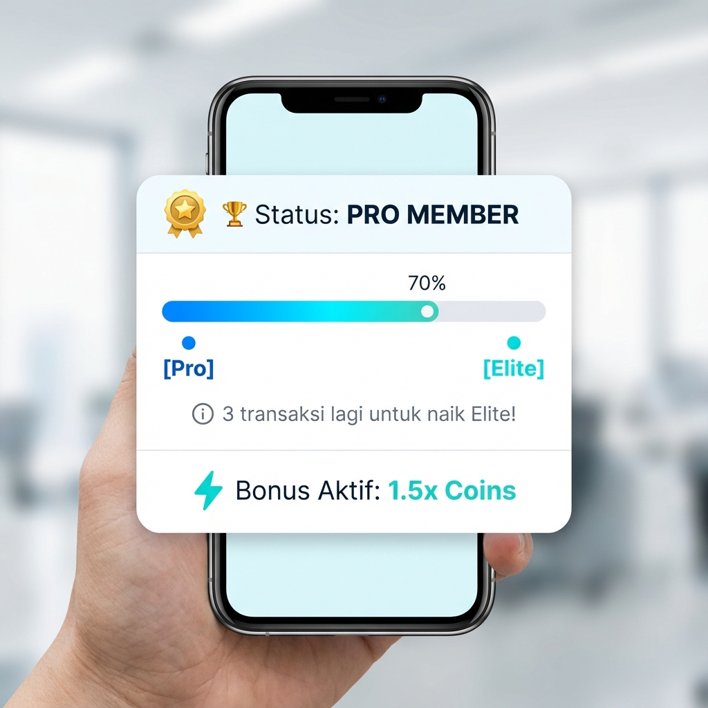

Tiered Loyalty System • Smart Redeem • Gamified Milestones
👤 Ridho Bintang Aulia|📅 1 Januari 2026|📋 Version 1.0
Speaker Notes: PRD ini bertujuan menjelaskan solusi loyalty program Topremit Elite untuk meningkatkan retention rate dari 60% menjadi 75% dan transaction frequency 2x lipat.
📋 Daftar Isi PRD
01
Project Background
Kondisi saat ini & masalah utama
5 Points
02
User Pain Points
Transactional Void, Koin Pasif, No Recognition
10 Points
03
Competitive Benchmarking
Gap analysis vs GrabRewards, Traveloka, Flip, Wise
15 Points
04
Proposed Solutions
Tiering System, Smart Redeem, Dynamic Multiplier
30 Points
05
Hypothesis
Primary & supporting hypotheses
10 Points
06
Features
Elite Dashboard, Smart Redeem, Milestones
35 Points
07
Success Metrics
Retention, CLV, Transaction Frequency
10 Points
08
Next Scope
Business Loyalty, Social Leaderboard, Partners
10 Points
Total Poin Evaluasi:105 Points
Speaker Notes: PRD ini disusun berdasarkan format standar dengan total 105 poin evaluasi. Setiap section dirancang untuk menjawab pertanyaan spesifik dari stakeholder.
📊 Executive Summary
⚠️
Masalah Utama
Ekosistem loyalitas Topremit bersifat transaksional satu arah. Pengguna setia tidak dapat apresiasi khusus, dan TR Coins dengan jumlah kecil menjadi "frozen assets" karena minimum penarikan Rp10.000.
💡
Solusi yang Diajukan
Topremit Elite - Program loyalitas bertingkat (Explorer → Pro → Elite) dengan Smart Redeem yang memungkinkan koin digunakan tanpa minimum threshold.
📈
Target Impact
+15%Retention Rate
2xTx Frequency
+25%CLV
🎯 Value Proposition: Mengubah TR Coins dari "saldo tambahan" menjadi "alat retensi strategis" melalui tier system dan smart redeem.
Speaker Notes: Executive summary menunjukkan masalah, solusi, dan impact yang diharapkan secara ringkas untuk stakeholder yang tidak punya banyak waktu.
🔍 Project Background
🪙
Ekosistem Saat Ini
TR Coins: Cashback poin untuk setiap transaksi remitansi
Referral Program: Bonus Rp120.000 (Rp40.000 × 3)
Affiliate Program: Komisi untuk partner pendaftar
🚨
Critical Issues
❌ Minimum Withdrawal Barrier: Min Rp10.000 → frozen assets
❌ Price Sensitivity: User mudah switch karena selisih Rp5.000
❌ No Differentiation: Tidak ada pembeda user baru vs loyal
Current User Flow (No Engagement Loop)
👤 User Transaksi→🪙 Dapat Koin→🏦 Withdraw ke Bank→⚠️ No Loop!
Speaker Notes: Pasar remitansi Indonesia sangat kompetitif. Tanpa program loyalitas yang kuat, Topremit rentan kehilangan user ke kompetitor dengan selisih biaya kecil.
😔 Core User Pain Points
"Transactional Void"
💬
"Saya sudah 2 tahun kirim uang lewat Topremit, tapi perlakuannya sama saja dengan pengguna baru."
😔
Koin Pasif
Koin Rp2.000 tidak bisa digunakan karena minimum withdrawal Rp10.000
"Koin saya jadi dead value..."
💔
No Recognition
Tidak ada apresiasi atau status spesial untuk pengguna setia
"Seharusnya saya dapat lebih..."
🚶
Low Attachment
Mudah pindah ke kompetitor karena tidak ada switching cost
"Tidak ada yang mengikat saya..."
Speaker Notes: Pain point ini dipilih karena berdampak langsung ke retention. User seperti Ibu Maria (kirim ke anak di UK) dan Pak Budi (UMKM) butuh apresiasi lebih.
👥 User Persona
👩🦳
Ibu Maria
55 tahun
Kirim uang bulanan ke anak di UK untuk biaya kuliah
Pain Point: Ingin diskon volume & prioritas customer support
⚡ Priority Support
👨💻
Andi
28 tahun
Freelancer, rutin kirim uang ke pacar yang tinggal di luar negeri
Pain Point: Mencari rate terbaik, mudah pindah aplikasi karena selisih biaya kecil
📊 Best Rate + Loyalty
Speaker Notes: Ketiga persona mewakili segmen utama: personal regular, business, dan freelancer. Masing-masing punya expectation berbeda terhadap loyalty program.
❓ Why This Problem Matters
❌ Jika Tidak Diselesaikan
📉 Churn tinggi ke kompetitor (Wise, Flip)
📉 Frekuensi transaksi stagnan di 1.2x/bulan
📉 Customer Lifetime Value tetap rendah
📉 Biaya akuisisi mahal, retention lemah
✅ Jika Diselesaikan
📈 Switching cost meningkat drastis
📈 Emotional attachment kuat ke brand
📈 User mengejar tier naik → tx lebih sering
📈 Revenue per user meningkat +25%
🎯
Koneksi ke Tujuan Bisnis:
Meningkatkan retention 15% → Mengurangi biaya akuisisi → Profitabilitas per user naik Cost of acquiring new customer 5x lebih mahal dari retain existing customer.
Speaker Notes: Cost of acquiring new customer 5x lebih mahal dari retain existing. Loyalty program adalah investasi untuk profitabilitas jangka panjang.
Speaker Notes: Topremit bisa menang dengan fokus empathy-based loyalty dan instant value tanpa minimum threshold.
🎯 Product Goal & Success Definition
🚀
Tujuan Produk
Meningkatkan customer retention dan transaction frequency melalui program loyalitas yang memberikan nilai instan dan pengakuan status.
📊 Definisi Sukses (SMART Metrics)
60%
→
75%
Retention Rate
+15%
1.2x
→
2x
Avg Tx/Month
+67%
Base
→
+25%
Customer LTV
Revenue ↑
Speaker Notes: Metrics ini sejalan dengan tujuan bisnis Topremit untuk sustainable growth melalui customer retention. Semua target terukur dan achievable dalam 6 bulan.
💡 Proposed Solution Overview
🏆 Tiered Loyalty System
Explorer0-2 tx1x Coins
→
Pro3-5 tx1.5x Coins + 25% Disc
→
Elite6+ tx2x Coins + FREE Admin
💳Smart Redeem
Gunakan koin tanpa minimum di checkout - semua koin jadi valuable!
Speaker Notes: Solusi ini menjawab pain point dengan memberikan nilai instan (Smart Redeem), pengakuan status (Tier), dan motivasi berkelanjutan (Milestones).
📋 Solution Prioritization
🚀 Quick Wins (P0)
Smart Redeem Toggle
Dynamic Coin Multiplier
Low Effort
⭐ Strategic (P0)
Tiering System (Explorer/Pro/Elite)
Medium Effort
📝 Fill-ins (P1)
Gamified Milestones
Elite Dashboard
Low Effort
🎁 Nice to Have (P2)
Birthday Bonus Coins
Priority CS Queue
Low Effort
← Low EffortHigh Effort →
↑ High Impact
Speaker Notes: Prioritas P0 dipilih karena high impact dengan effort yang manageable. Smart Redeem adalah quick win karena hanya butuh toggle di checkout page.
🔬 Hypothesis
💡
Primary Hypothesis
"Dengan mengimplementasikan Topremit Elite (Tiering System), kita akan meningkatkan Retention Rate sebesar 25% karena pengguna akan merasa rugi kehilangan benefit Free Admin Fee jika mereka pindah ke kompetitor."
#
Supporting Hypothesis
Validation Method
Timeline
H1
Elite user akan melakukan 2x lebih banyak transaksi dari Explorer
A/B test dengan cohort
3 bulan
H2
Smart Redeem akan digunakan oleh >35% user dalam transaksi
Feature adoption tracking
1 bulan
H3
Tier naik akan menciptakan loss aversion → churn menurun
Cohort analysis
3 bulan
Speaker Notes: Hipotesis ini akan diuji melalui A/B testing dan cohort analysis selama 3 bulan pertama setelah launch.
🎨 Feature: Elite Dashboard
P0 - Must Have
📖 User Story:
"Sebagai user, saya ingin melihat progres tier saya, agar saya tahu berapa transaksi lagi untuk naik level."
✅ Acceptance Criteria:
✓ Progress bar di menu "Profil" menunjukkan posisi tier
✓ Daftar benefit aktif sesuai tier saat ini
✓ Notifikasi push saat hampir naik tier (1 tx lagi)
✓ Visual perbandingan benefit antar tier

Speaker Notes: Dashboard memberikan visibilitas progress sehingga user termotivasi mengejar tier. Gamifikasi progress bar terbukti meningkatkan engagement.
💰 Feature: Admin Discount
P0 - Must Have
📖 User Story:
"Sebagai user tier Elite, saya ingin diskon biaya admin otomatis, agar pengiriman uang lebih murah."
💎 Discount per Tier:
Explorer0%
Pro25%
Elite100% FREE
✅ Acceptance Criteria:
✓ Sistem otomatis memotong biaya admin
✓ Label "Elite Discount Applied" ditampilkan
✓ Breakdown: harga normal vs setelah diskon
💰Payment Summary
Biaya PengirimanRp 45.000
🏆 Elite Discount-Rp 45.000 (100%)
Total Biaya PengirimanFREE ✓
🏆 Elite Member Exclusive
Speaker Notes: Diskon admin adalah benefit paling tangible. Elite tier mendapat FREE admin fee sebagai ultimate benefit untuk mendorong upgrade.
💳 Feature: Smart Redeem
P0 - Must Have
📖 User Story:
"Sebagai user, saya ingin menggunakan saldo TR Coins untuk memotong biaya admin langsung, agar transaksi lebih hemat."
❌ Before
TR Coins Rp2.000 → Tidak bisa ditarik (min Rp10.000)
Dead Value
✅ After (Smart Redeem)
Admin Rp45.000 - Coins Rp2.000 = Bayar Rp43.000
Instant Value
💳 Smart Redeem
ON
Gunakan TR Coins untuk potong biaya admin
💰 Saldo: 2.500 Coins
Biaya Admin:Rp 45.000
Potongan Coins:-Rp 2.000
Bayar:Rp 43.000
Speaker Notes: Smart Redeem menghilangkan friction "koin mati". Semua koin jadi valuable, meningkatkan perceived value program. Adoption target: >40%.
🎮 Feature: Milestones & Gamification
P1 - Should Have
📖 User Story:
"Sebagai user, saya ingin dapat koin tambahan saat mencapai target tertentu, agar saya termotivasi bertransaksi lebih sering."
🎉
First Transaction
+5.000 coinsWelcome bonus!
🚀
5 Tx/Month
+10.000 coinsPower user reward
🎂
Birthday Month
+15.000 coinsSpecial gift!
👥
Referral Success
+40.000 coinsInvite & earn
💡Milestone menciptakan emotional engagement melalui achievement popup dan celebration moment. #KepodanPeka
Speaker Notes: Gamifikasi memanfaatkan psikologi reward untuk mendorong perilaku yang diinginkan. Birthday bonus menciptakan emotional connection yang kuat.
📊 Metrics & Analytics
🎯 Primary Metrics
75%Retention RateTarget: +15% dari 60%
2xAvg Tx/MonthTarget: dari 1.2x
+25%CLVRevenue per user
>35%Redeem RateSmart Redeem usage
📆 Tracking Plan
DailyActive users by tier
WeeklyRedemption rate, feature adoption
MonthlyRetention cohort, CLV calculation
QuarterlyBusiness impact review
Speaker Notes: Tracking plan memastikan data-driven execution. Regular review untuk iterasi berdasarkan insight.
📐 Metrics Justification & Assumptions
Berikut adalah dasar logis dan argumen untuk setiap target metrik yang ditetapkan dalam PRD ini:
📊
Retention Rate: 60% → 75%+15%
📚 Basis:
Industry Benchmark: Rata-rata retention rate fintech loyalty program adalah 70-80% (sumber: Bain & Company)
Loss Aversion Effect: User yang sudah mencapai tier Pro/Elite akan kehilangan benefit FREE admin fee jika churn → psychological barrier
Comparable: GrabRewards meningkatkan retention 18% setelah implementasi tiering system
Asumsi Konservatif: 15% peningkatan = 50% dari potensi maksimal (30% gap to industry best)
🔄
Tx Frequency: 1.2x → 2x/bulan+67%
📚 Basis:
Gamification Effect: User mengejar tier naik membutuhkan 3-6 transaksi dalam 6 bulan → avg 0.5-1x/bulan menjadi motivasi tambahan
Smart Redeem Incentive: Koin bisa langsung dipakai → user lebih sering transaksi untuk akumulasi koin
Industry Data: Loyalty programs typically increase CLV 20-30% (Harvard Business Review)
Note: Discount cost (FREE admin untuk Elite) dikompensasi oleh volume transaksi yang lebih tinggi
💳
Smart Redeem Adoption: >35%Feature Usage
📚 Basis:
Similar Feature: Tokopedia Points redemption rate ~40% (internal benchmark)
Friction Removal: Menghilangkan minimum Rp10.000 membuka ~60% user dengan saldo kecil
Default ON: Toggle Smart Redeem default aktif di checkout → passive adoption
Konservatif: Target >35% adalah 70% dari potensi maksimal untuk safe estimation
Speaker Notes: Semua metrik didasarkan pada industry benchmark, comparable analysis, dan asumsi konservatif. Target bersifat achievable dengan buffer 20-30% dari potensi maksimal.
Speaker Notes: MVP di Q1 fokus ke fitur P0 yang memberikan impact tertinggi. Iterasi berdasarkan data sebelum expand ke phase berikutnya.
⚠️ Risk & Mitigation
Kategori
Risk
Impact
Mitigation
👤 User
Kebingungan tentang tier system
Medium
Clear onboarding & in-app education tooltips
💼 Business
High discount impact on revenue
High
Cap on max discount per user per month
🔧 Technical
Tier calculation complexity
Medium
Phased rollout, extensive beta testing
💼 Business
Referral fraud abuse
Medium
KYC verification & transaction min requirements
Speaker Notes: Risk assessment menunjukkan kematangan PM dalam perencanaan. Setiap risk sudah ada mitigation plan yang konkret.
📈 Business Impact Summary
60%→75%
Retention Rate+15%
1.2x→2x
Tx Frequency+67%
+25%
Customer Lifetime ValueRevenue ↑
🚀 Mengapa Layak Dibangun?
✅ Mengurangi churn = mengurangi cost akuisisi (5x lebih mahal)
✅ Meningkatkan revenue per user melalui frekuensi tinggi
✅ Membangun competitive moat yang sulit ditiru
✅ Foundation untuk future features (Business, Social, Partners)
Speaker Notes: ROI jelas - investasi di loyalty program memberikan return melalui reduced churn dan increased CLV. Worth building untuk sustainable growth.
🔮 Next Iteration & Closing
Future Scope (6-12 Months)
💼Business Loyalty
Fitur khusus untuk pemilik bisnis
🏆Social Leaderboard
Top Contributor ranking
🔄Partner Exchange
Tukar koin ke partner points
"Turning Transactions into Relationships"
#KepodanPeka #TopremitElite
Terima Kasih
Ridho Bintang Aulia
Product Manager Candidate
Open for Discussion & Questions
Speaker Notes: Closing dengan invitation for discussion. PRD ini siap dieksekusi oleh tim engineering dan design dengan requirement yang jelas.